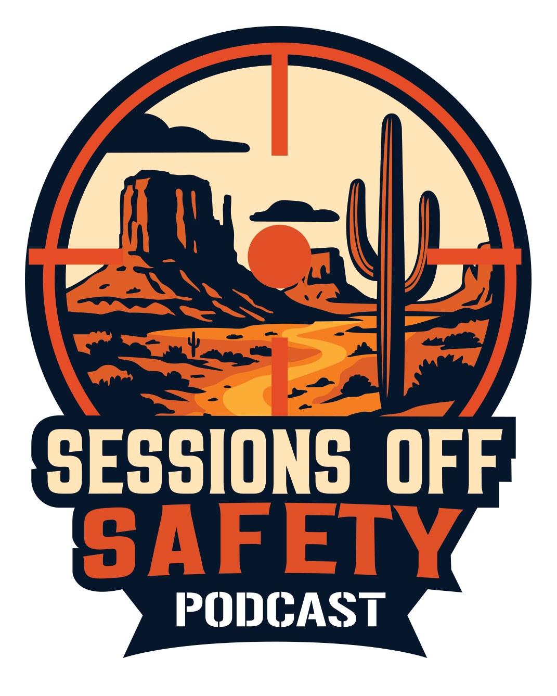
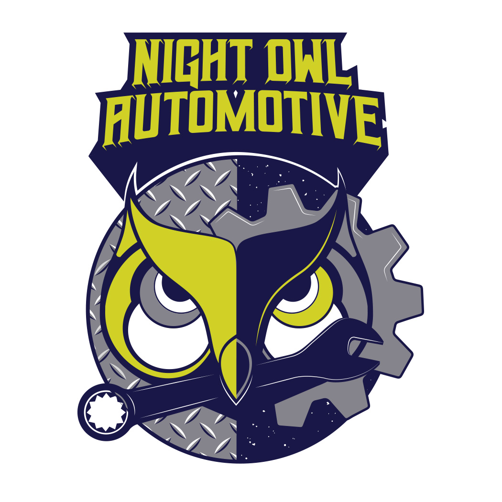
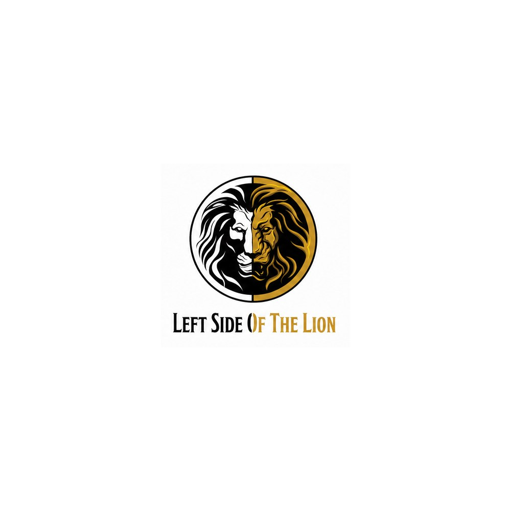
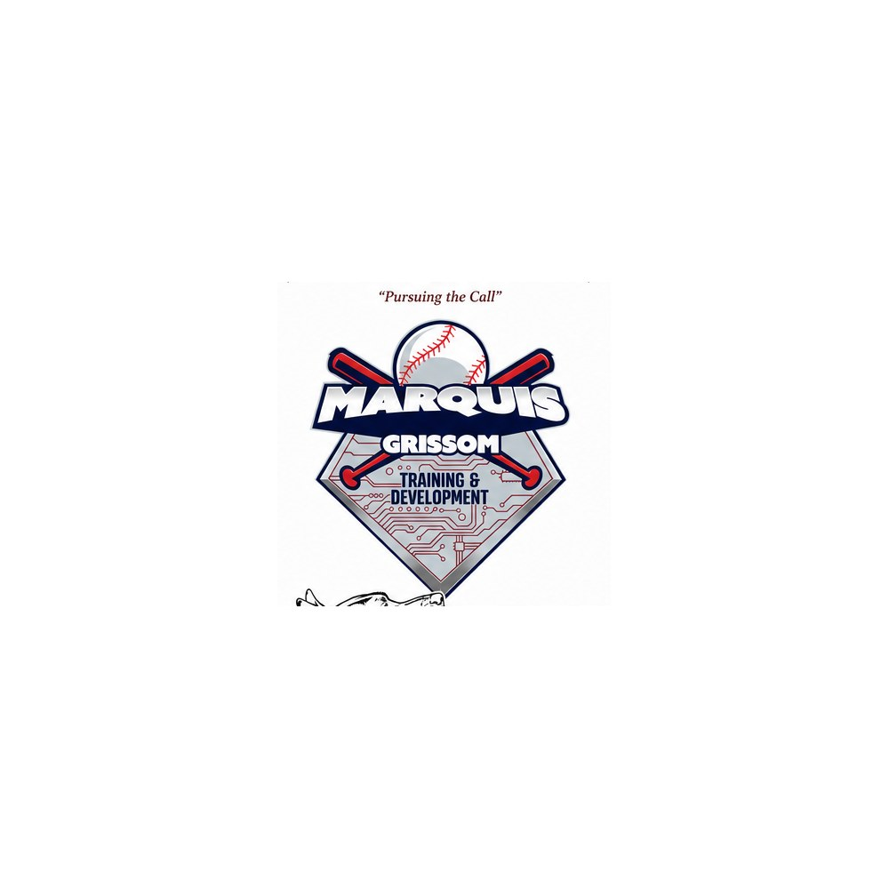
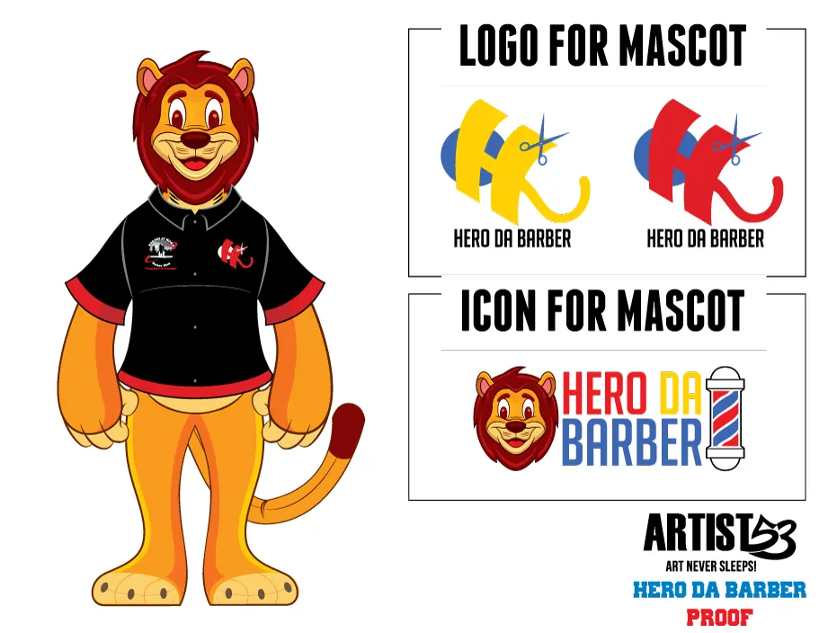
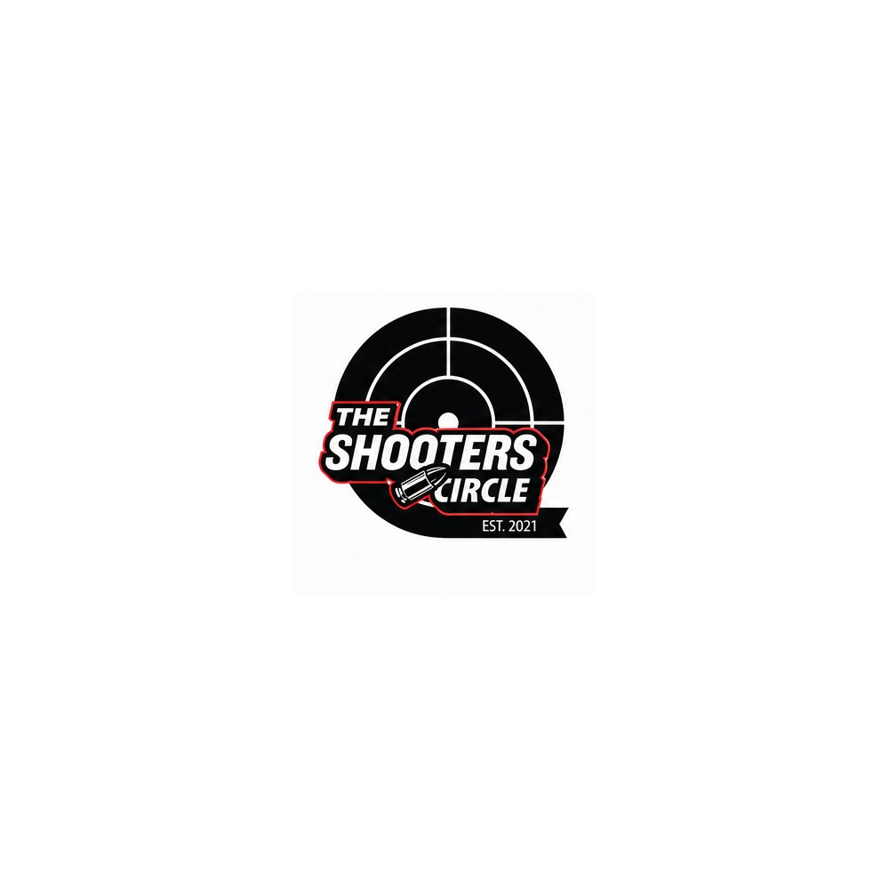
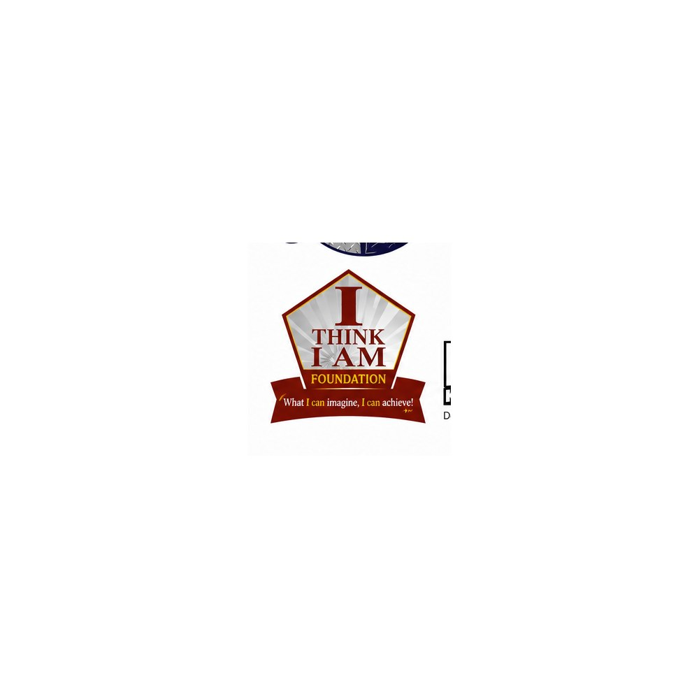
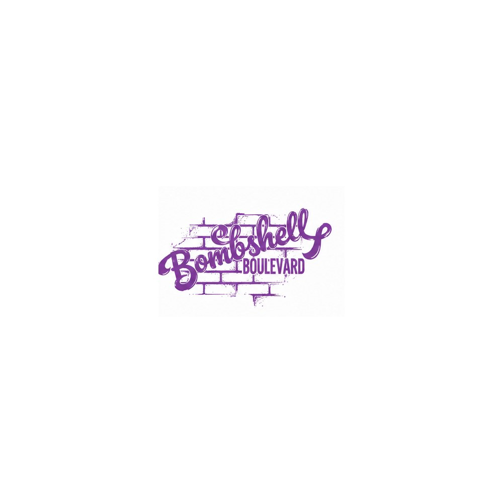

Discover
I learn about the business, the audience and what the logo needs to communicate.

Logo Design
A strong logo should feel clear, recognizable and right for the business it represents. I build marks that can hold their own across websites, social media, apparel, signage and everything in between.
Start A Logo ProjectSelected Work
Click a linked project to see the thinking, details and story behind the mark. More individual case studies are being added as the portfolio grows.









Every logo starts with understanding what the business needs before the drawing begins.
I learn about the business, the audience and what the logo needs to communicate.
I explore different directions and work through the strongest ideas by hand.
The selected concept is cleaned up, balanced and tested in different sizes.
You receive polished logo files prepared for print, web and everyday use.